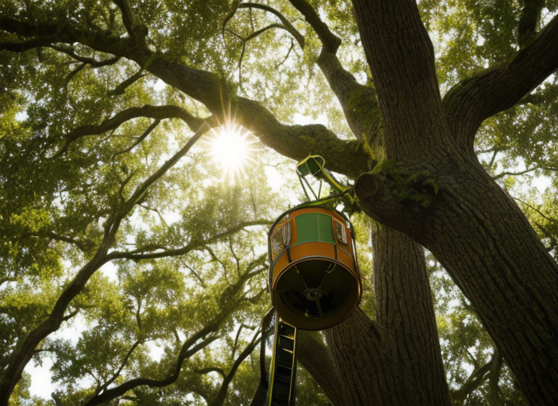
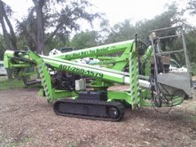
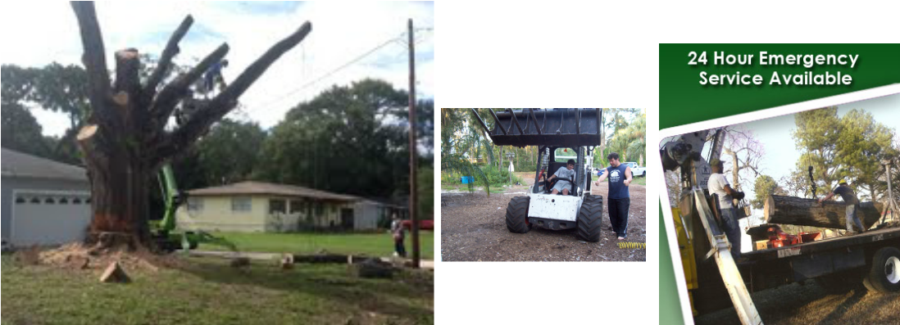
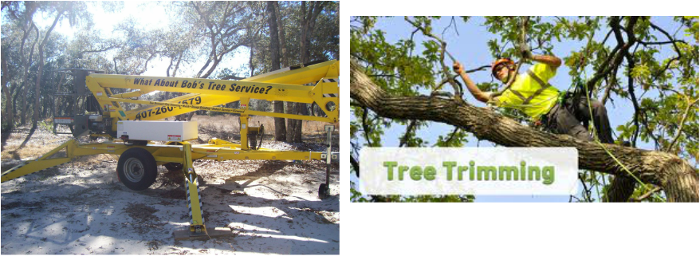
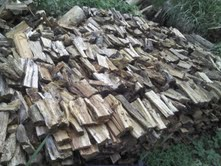
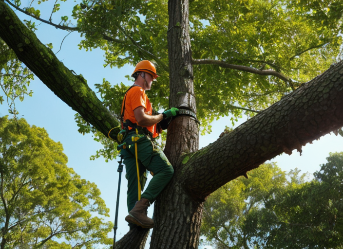

Coverage
Orange, Seminole, VolusiaLicensed and insured | free estimates | 24-hour emergency service
Tree removal and storm-ready care built for Central Florida properties.
Family owned and operated with more than 20 years of experience serving Orange, Seminole, and Volusia counties. From difficult removals to routine trimming, high-lift access, stump grinding, and cleanup, Bob and Dawn make it easy to call, schedule, and get the job handled with confidence.
20+ years experience
55 ft high-lift reach
Tree removal and trimming
Stump grinding and cleanup
Serving 24 listed cities


Emergency work
24-hour responseReach
55 ft high lift accessService atlas
Service counties and city coverage, centered where the work happens.
The live public service list names Orange, Seminole, and Volusia counties, with Sanford at the center and a long list of nearby cities already being served.
Orange County
Seminole County
Volusia County
Sanford hub
Services
Clear service lanes for homeowners, landlords, and property managers.
The current website already names the work. This layout simply makes it easier for someone to find their need, trust the crew, and call without digging.
Emergency tree removal
24-hour emergency support for storm damage, fallen limbs, and hazard trees.
Tree trimming and thinning
Routine canopy work to improve airflow, safety, shape, and curb appeal.
Stump grinding
Removal and cleanup options that leave the yard looking finished instead of half-done.
55 ft high-lift access
Extra reach for difficult locations, backyard work, and jobs that need safer access.
Bobcat, crane, and cleanup support
Equipment-backed jobs with debris handling, cleanup, and stronger job-site control.
Firewood and mulch add-ons
Seasoned firewood, free mulch with tree work, and extra value from the same visit.
Visual proof
Three data moments that make the service story easier to trust.
These animated blocks keep the page feeling premium while staying tied to what the business actually promises today.
County footprint
Three county service podiumBuilt around the live public county list, with Sanford as the central operating hub.
Access and reach
55 ft equipment advantageThe tree-care page already positions high-reach access as a differentiator for harder locations and dangerous removals.
Call path
Fast estimate and emergency flowThe live homepage promises free estimates and emergency help, so the visual path keeps those promises front and center.
Gallery
Real field proof first, polished presentation second.
The public website already has authentic work photos and equipment shots. This layout gives them the space and hierarchy they deserve.




Storm readiness
Hurricane-season messaging should feel urgent, clear, and useful.
Bob’s live hurricane page already says the important part: trim and thin trees before the wind has a chance to put a house, fence, or power line at risk. This section turns that advice into a faster, easier-to-scan service message.
Trim and thin trees before peak storm pressure
Remove dead branches and unstable trees early
Use high-lift access for dangerous or tight-location work
Storm prep works best before the first emergency call.
Use the seasonality angle to help homeowners act before limbs are over roofs, fences, and power lines.
Savings and specials
Real offers, elevated into a cleaner trust-building section.
Keep the senior offer easy to spot instead of burying it in an all-caps text wall.
Promote stump grinding with qualified tree removals up to the live public cap.
Turn the existing trim offer into a simple high-value callout homeowners can act on.
Make the referral incentive visible so past customers help drive the next calls.
Use the higher-ticket discount as a clean close for medium and larger projects.
Small details like free mulch make the business feel more helpful and complete.
About Bob and Dawn
Family-owned service with real equipment, real cleanup, and real local familiarity.
The public site already gives the right trust anchors: family owned and operated, more than 20 years of experience, licensed and insured, climbers available when needed, and the equipment to handle harder jobs without making the homeowner guess.
Call Bob or Dawn directly instead of chasing a generic lead form into silence.
Tree removal, trimming, thinning, stump grinding, planting, crane work, and cleanup.
Family ownership, field photos, licensed and insured status, and strong local service-area clarity.
Free estimates, seasonal offers, firewood, free mulch, and a cleaner call-to-job path.
Request service
Talk to Bob or Dawn and get a free estimate started.
Whether the job is urgent or just needs a careful walkthrough, the next step should be obvious the moment someone lands on the page.